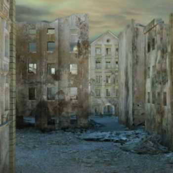
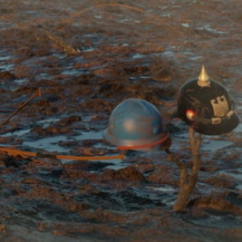

Cinématique
1918, les fantômes de la Grande Guerre est un projet réalisé dans le cadre des cours de MAO au concervatoire. Cette cinématique, dont j'ai composé les musiques, représente la fin de la Grande Guerre dans l'est de la France, entre l'Allemagne et la France.
Après avoir travaillé sur quelques musiques, mon professeur de MAO m'a demandé de réflechir à un projet que l'on pourait faire en cours et présenter à la fin de l'année. Après quelques moments de réflexion, j'ai décidé de partir sur un petit jeu vidéo ou une cinématique. Le manque de temps nous a cependant orienté vers la cinématique. Nous avons donc crée les décors en 3d, d'abord sur Cinema 4d puis sur Unreal Engine 4 qui s'est avéré être beaucoup plus pratique pour faire les rendu plus rapidement, ce dont nous avions grandement besoin car nous manquions de temps. Pour la deuxième partie, il était difficile de faire une caverne avec le peu de temps à notre disposition. Nous avons donc choisi de modéliser un champ de bataille qui restait dans le thème de la guerre, même si cela ne correspondait plus au nom La Caverne du Dragon.
Pour ma part, j'ai composé les musiques sur Cubase. Bien qu'il n'y ai que trois morceaux, j'ai aussi fait les sons intermédiaires entre les musiques et synchronisé les bruits de pas à la fin de la vidéo. Comme le projet était à la base un jeu vidéo, j'ai aussi composé une autre version de La Caverne du Dragon qui était plus adaptée pour un jeu mais qui n'a malheureusement pas été utilisé dans la cinématique. Les dernières semaines du projet ont été plus tranquilles, nous avons eu le temps de faire le montage de la vidéo et corriger les dernières erreurs. C'est ainsi que nous avons fini le projet dans les temps pour pouvoir le présenter. Pour finir, je dois dire que j'ai vraiment apprécié travailler sur ce projet. La Caverne du Dragon est sans doute ma composition la plus travaillé, c'est aussi la première que j'ai orchestré à ce niveau -à savoir que j'ai dû en couper trente secondes pour que la musique rentre dans la cinématique-. Concernant Neige, je dois dire que j'aime beaucoup la mélodie que j'ai composé, le morceau est "simple", pour ne pas être trop lourd dans un moment de tranquilité et de recueillement.